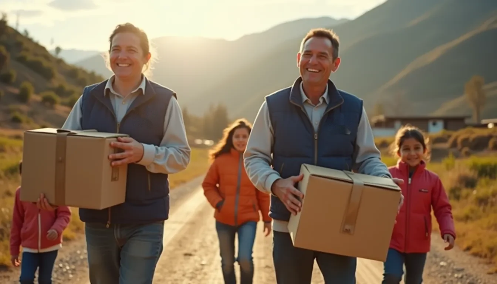
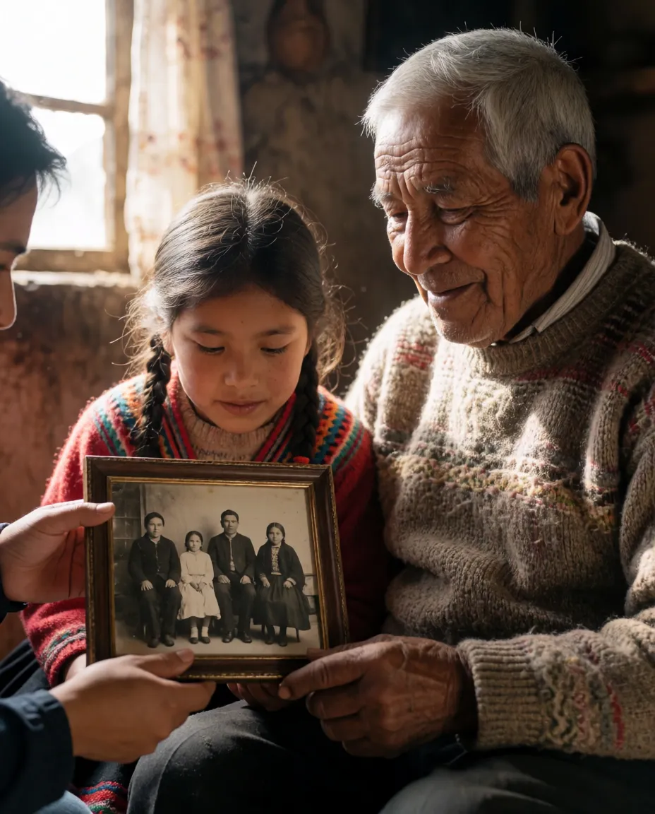

The Timeless Frames Foundation
Quiénes somos
Nuestra visión
Timeless Frames imagina un mundo donde cada persona, comunidad y cultura sea celebrada y apoyada a través del lenguaje universal del arte y la filantropía.
Nuestra visión va más allá de preservar el patrimonio cultural: buscamos fomentar una sociedad global que prospere gracias a la empatía, la comprensión y el apoyo mutuo. Al integrar iniciativas benéficas con la preservación cultural, queremos generar cambios positivos y sostenibles que se extiendan por las comunidades y enriquezcan vidas hoy y en las generaciones futuras.
Nuestra misión
Timeless Frames se dedica a preservar el patrimonio cultural y apoyar a comunidades necesitadas mediante proyectos innovadores y alianzas estratégicas. Nuestra misión es crear un legado de compasión, innovación e inclusión, asegurando que las tradiciones culturales prosperen y que las comunidades tengan el poder de construir un futuro mejor.

Nuestras metas
Nuestras metas reflejan nuestro compromiso con el crecimiento, la sostenibilidad y la creación de oportunidades para artesanos y comunidades de todo el mundo.
- Ampliar nuestra red de voluntariosAumentar significativamente nuestra red global de voluntarios, con énfasis en jóvenes profesionales y estudiantes.
- Fortalecer la recaudaciónDuplicar nuestra capacidad de recaudación mediante plataformas de crowdfunding, patrocinios corporativos y subvenciones.
- Nuevos proyectos de preservación culturalIniciar proyectos para preservar prácticas culturales en peligro y dar espacio a artistas subrepresentados.
- Alianzas estratégicasEstablecer alianzas con organizaciones y empresas afines en todo el mundo.
- Programas educativosDesarrollar iniciativas educativas centradas en la apreciación cultural, la ciudadanía global y las artes.
Participa
Te invitamos a unirte a este camino con propósito. Tu apoyo, ya sea como voluntario, con una donación o simplemente corriendo la voz, es invaluable para nuestra misión. Unámonos bajo la bandera de Timeless Frames para crear un legado de compasión, innovación e inclusión para las generaciones futuras.
♥ Donar